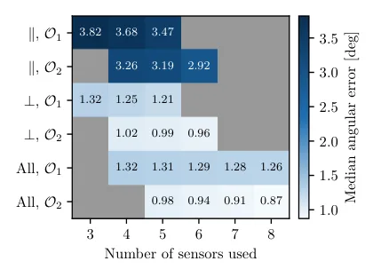
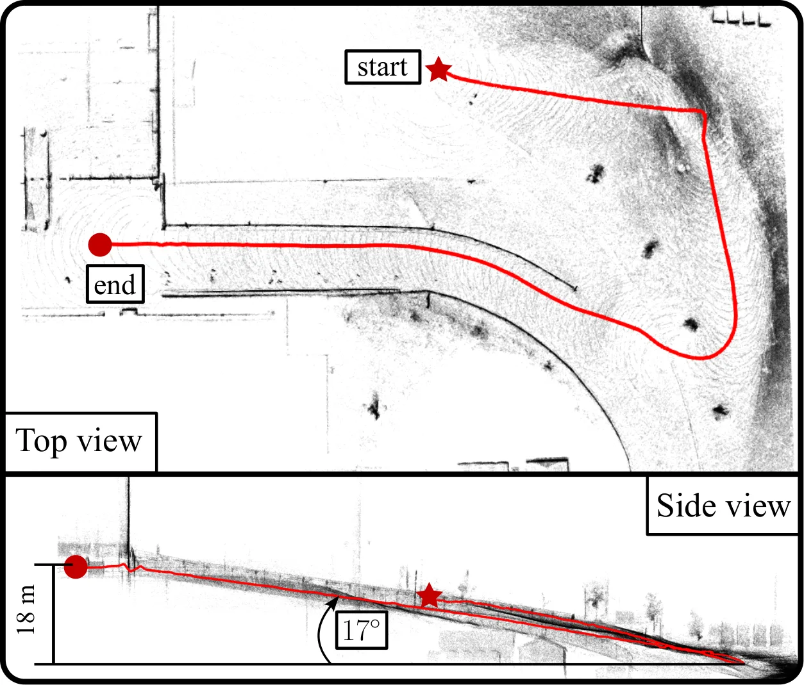

Pressure Drop：用分布式气压传感器阵列直接估计重力方向
Pressure Drop: Gravity Vector Estimation from a Distributed Barometric Pressure Sensor Array
一句话：不靠加速度计，改用一排气压计测出的相对高程把重力方向直接解出来，与机器人怎么动无关。
median tilt error
improvement
baseline
trajectory
作者、单位与技术谱系 · Research context
作者与单位
研究脉络
- LiDAR–IMU–气压计紧耦合 SLAM（本文引 [7]）方法基座关系：本文的高程计算链路与气压计偏置标定直接沿用该工作，把「高程约束」升级为「方向观测」。[Pressure Drop 原文 §III-A]
- AUV 气压阵列 roll/pitch 理论（本文引 [4]）方法上游关系：提供多压力传感器解姿态角的通用关系；本文补上可观测性分析、三传感器特例与噪声评估。[Pressure Drop 原文 §II-A、§III-B]
- VQF / Madgwick（IMU 倾角基线）对照基线关系：作为「间接观测」的代表被系统比较，用来量化直接观测在动态与饱和场景下的优势。[Pressure Drop 原文 §III-C、§IV-D]
合作网络
- Université Laval Norlab × INRAE TSCFNorthern Robotics Laboratory (Laval) → INRAE UR TSCF / Université Clermont Auvergne关系：共同署名（双聘）[arXiv 摘要页]
- Norlab → 现场机器人平台Northern Robotics Laboratory → Canada Research Chair on Field Robotics关系：项目/经费依赖[Pressure Drop 原文 Acknowledgment]
- Pressure Drop → ICP 建图气压重力估计 → ICP 定位与建图关系：技术依赖（下游使用）[Pressure Drop 原文 §IV-E]
作者单位取自论文首页；[7]/[4]/VQF 的技术接续取自正文显式引用；通讯作者身份按末位作者与公开邮箱推断并在条目中注明，论文未标通讯符号。
方法本质拆解 · What actually changed
是不是微调？
完全没有学习成分，是解析解加滤波：重力方向由最小二乘闭式解给出，之后可选地加一步低通/滤波平滑。唯一的「标定」是用 Setra 278 工业压力计对齐各 MEMS 气压计的偏置，这属于硬件标定而非模型训练。
有没有额外约束？
核心约束有两条：一是刚体假设，各传感器在机体系里的相对位置固定已知，支架柔性会直接破坏它（>1.25 m 时实测误差抬升）；二是大气假设，虚拟温度取常数、以相对高程消掉绝对气压偏置。三传感器时额外用 ‖g‖=1 的范数约束，但这只把解压到两点，符号仍需外部先验。
推理/后端到底做了什么？
每个估计周期只做三件事：把各气压计读数换成相对高程、乘固定矩阵 H=(PᵀP)⁻¹Pᵀ 得到重力向量、归一化并可选低通。没有迭代优化、没有滑窗、没有与 IMU 的联合估计；接进建图时也只是把倾角当作点云预对齐的里程计先验，最终仍由 ICP 精配准。
方法本质是什么？
本质是把「测重力」从动力学问题转成几何问题：不再从加速度里分离重力与运动，而是测同一刚体上不同点的高度差，用已知的传感器几何把方向反解出来。它改变的是倾角观测与本体加速度的耦合这一不确定性，代价是把不确定性转移到了阵列尺寸、气压噪声与大气稳定性上。
输入是一组已知几何布局的气压计读数，压差换成相对高程后乘固定最小二乘矩阵直接解出重力方向；改变的是「重力只能从加速度间接观测」，用几何冗余换掉了与运动的耦合。

桥接价值Bridge
桥接价值
在走廊、长林道、电梯这类几何退化环境里，SLAM 漂移的根因是某个方向没有约束，而重力恰好是唯一一个「与场景几何无关」的绝对方向参考。这篇桥接的是传感器设计与状态估计：它不改后端，只是给后端多一路与运动解耦的倾角观测。对我们来说，这是一条低成本、可与 IMU 故障互补的冗余通道，也顺手提供了一套「先做可观测性分析再谈精度」的写法。
方法与模块Method
方法摘要
先用陶瓷基准压力计标定 MEMS 气压计，按湿空气方程把压差换成相对高程差 δz = (R_dry·T̄_v/g)·ln(p0/p1)；把各传感器相对原点传感器的高程差堆成观测向量 z，与位置矩阵 P（每行是 qi−q0 的转置）构成 z = Pg。P 秩为 3 时用最小二乘 g = (PᵀP)⁻¹Pᵀz 直接解重力方向；N=3 时秩只有 2，作者用 ‖g‖=1 的范数约束把解限制成两点并给出判别式，说明除特例外必然存在符号二义。误差分析给出 Σφ = σ²(PᵀP)⁻¹，并推导出「垂直于重力的平面铺开最优、沿重力拉长会放大分子」的阵列几何结论。
可迁移模块
第一是可观测性结论本身：三维重力方向至少需要 4 个非共面测点（或 3 点加范数约束与先验），这给任何「用一组标量测点反解矢量」的传感器布置问题一个可复用的判据。第二是几何准则的量化形式：目标函数是 det(Σφ) 的 2×2 投影版本，分子只与沿重力方向的展开有关、分母只与三向展开体积有关，这种「分子–分母对立」的结构可直接套到其他阵列设计。第三是「与 IMU 解耦的独立通道」这一工程模式，可用于故障检测或作为因子图里的独立一元因子。

证据Evidence
关键证据与数字
半静态场景倾角中位误差 0.87°（Vicon 真值，8 个 DPS310、互距 190 cm 配置）；原点用两个传感器做平均可再降最高 28%，说明参考传感器的噪声会传播到所有相对高程。互距从 60 cm 扫到 190 cm，理论曲线与实测在 1.25 m 之前吻合、之后因支架柔性破坏刚体假设而抬升并进入平台，因此作者把机器人配置定在 1.25 m。高动态实验按加速度分四档（分界取 CHR-UM6 的 ±2 g 量程）：本文方法误差在各档基本持平，VQF 与 Madgwick + MTi-10 随加速度略升，Madgwick + CHR-UM6 在加速度计饱和后完全失准。ICP 集成演示轨迹 110 m、垂直落差 30 m、17° 坡，为定性结果。
边界与下一步Limits & Next Step
边界与风险
作者明确写道未来工作要研究车速影响、天气与持续振动，说明当前实验都是在温和户外条件下完成；虚拟温度被假设为常数，长时间温度漂移靠标定抑制，未给出漂移模型。我们的待核验项：1.25 m 阵列对小型平台（无人机、手持）不现实，缩放后误差如何变化文中只有理论曲线没有实测；三传感器符号歧义的实际消歧策略（车辆不会翻覆等先验）没有定量评估；室外只有一段 110 m 轨迹且无 ATE 数字，无法判断它在长距离退化场景里的实际贡献；与 IMU 融合的完整 SLAM 版本尚未实现。
下一步实验
最小实验一：在我们已有的 LiDAR/视觉退化序列（长走廊、隧道、林道）上，把气压倾角作为位姿图的 roll/pitch 一元因子接入，比较纯 IMU 重力、气压单源、两者按方差加权三档的垂向漂移、姿态 RMSE，以及在人为遮挡/扰动气压计时的降级表现。最小实验二：把阵列缩到 30–50 cm 量级（适合手持或小型机器人），用理论曲线预测误差上限，再用静态转台实测，验证「缩小后是否还能保持 1° 量级」。

